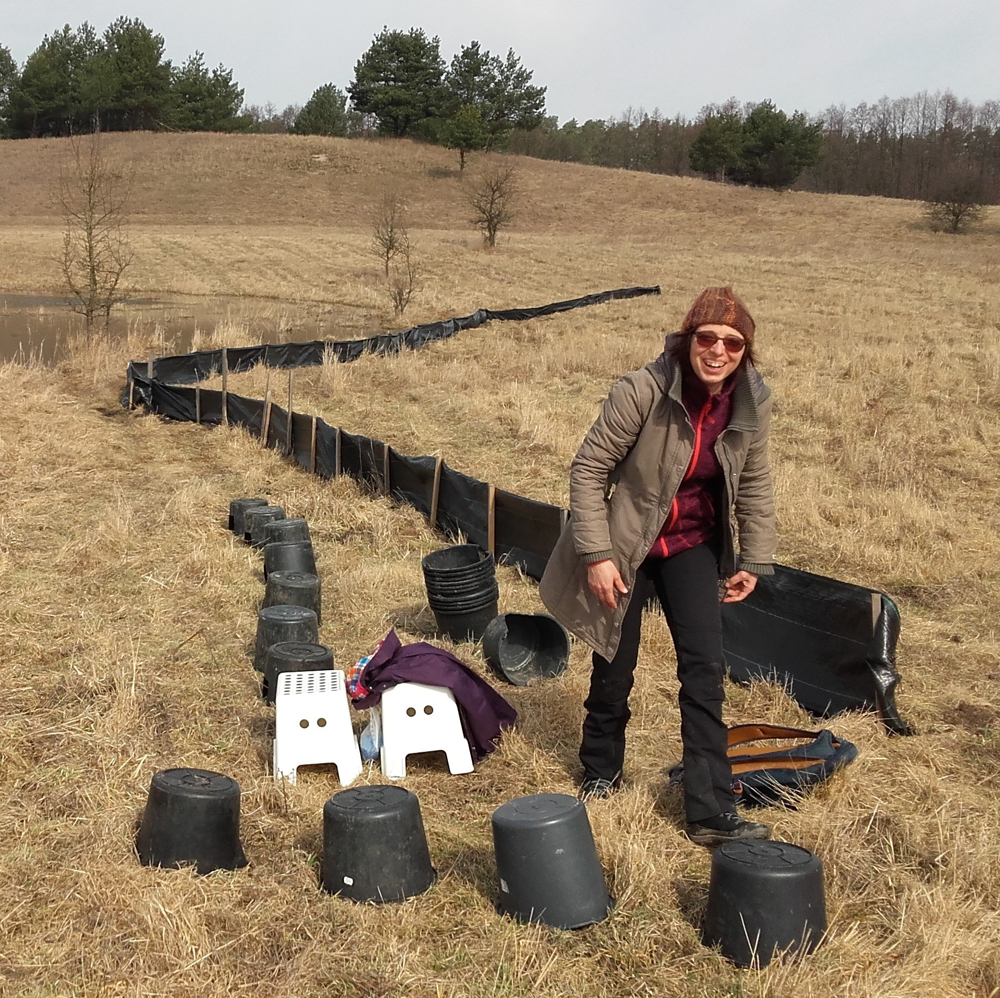
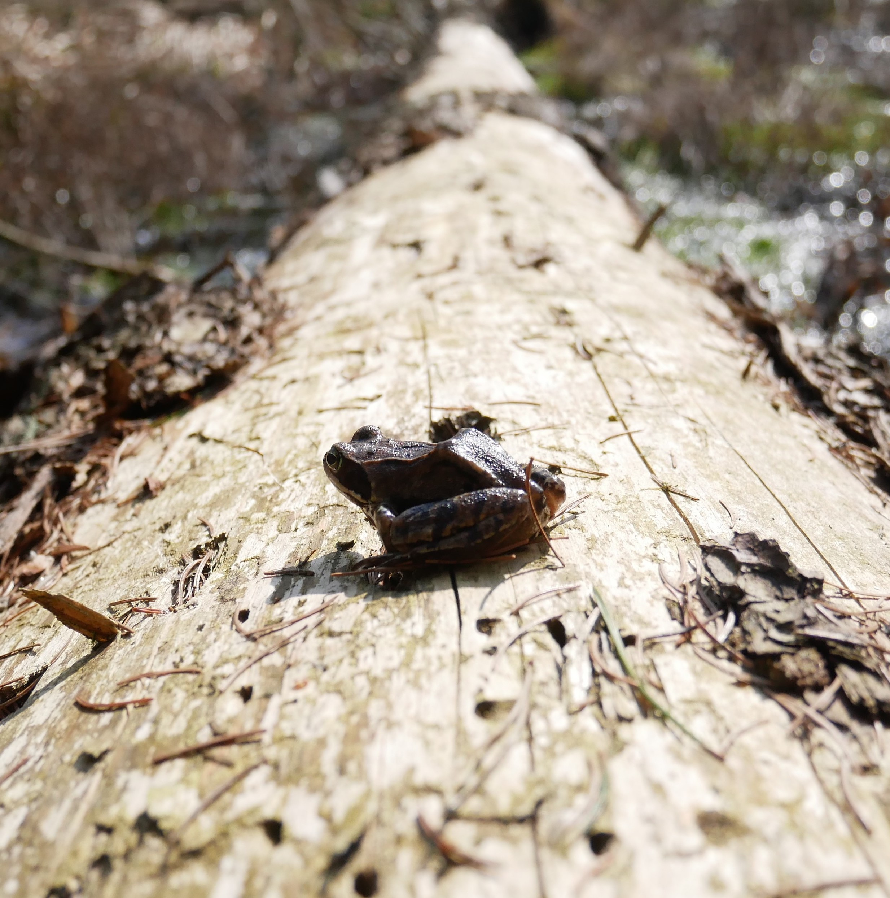

Research
Recent advances in behavioural ecology reveal there are still major gaps in our understanding of the complex interplay of different sources of phenotypic variation in shaping the behavioural individuality of an animal. The main aim of this research in the lab is to disentangle the roles of different sources of individual variation and reveal the complex mechanisms shaping animal behavioural individuality.
Water fleas
Key hypotheses:
- Past selective pressures, proximate ancestors’ experience, and developmental experience all combine in a predictive manner to produce individual behavioural types.
- The amount of between and within individual variation (i) decreases with the increasing reliability of environmental cues, and (ii) increases with increasing amplitude and frequency of environmental fluctuations.
- Consistent between individual differences in behaviour arise via state-behaviour feedbacks.
- Total amount of intra-genotype variation is inversely related to the frequency of sexual reproduction.
Frogs
Key hypotheses:
- Consistent between individual differences in behaviour arise via state-behaviour feedbacks.
- Where development is indirect, adult behavioural type is related to state upon entering metamorphosis rather than to larval behavioural phenotype.

Midges
Key hypothesis:
- Where development is indirect, adult behavioural type is related to state upon entering metamorphosis rather than to larval behavioural phenotype.


News
-

April 2018
First field sampling
We mark frogs during their migration from wintering grounds to the reservoir and collect eggs for further breeding
-

July 2018
First metamorphosis
First captive tadpoles mature to become frogs
-

August 2018
Automatization
With the help of Adriana and Krzysztof, we harness digital algorithms for reading the position and movement of animals
-

September 2018
First results
We present the results of pilot experiments during the Congress of Polish Hydrobiologists and the Polish Evolutionary Conference
-

March 2019
Second field sammpling
Females move later than males this year
-
spring and summer 2019
Second metamorphosis
200 tadpoles grow and star in our recordings
-
autumn 2019
Plankton organs
We record Daphnia behaviour in the setup of a physical model of a lake
-
Join us!
Our team
& associates

Aleksandra Czerwonka
Daphnia personalities & lab management
Barbara Płaskonka
frog personalities
Anna Zaborowska
herpetology & lab management
Monika Sysiak
vertical migrations
Joanna Kiljańska
crowding
Magdalena Batko
tadpole behaviour
Adriana Bukała
image analysis
Joanna Pijanowska
Good spirit
Krzysztof Fiok
artificial intelligence
Magdalena Rusiłowicz
personality

Andrzej Mikulski
thinking